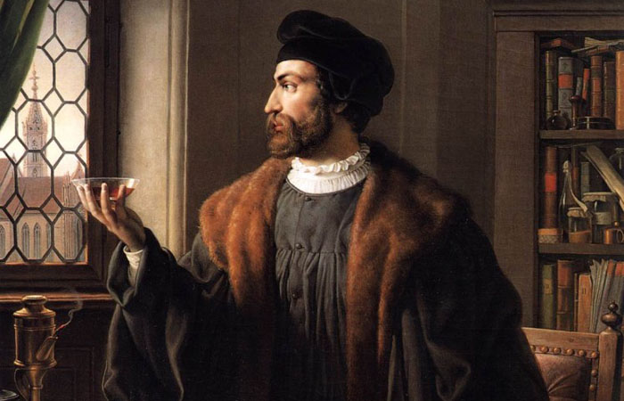
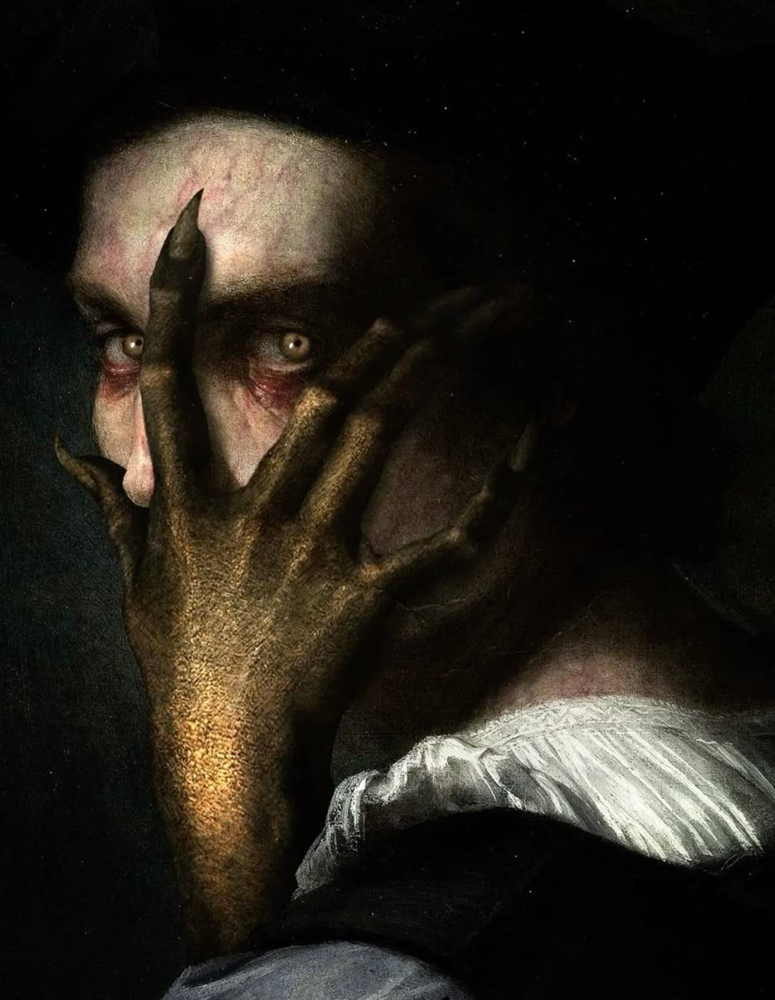
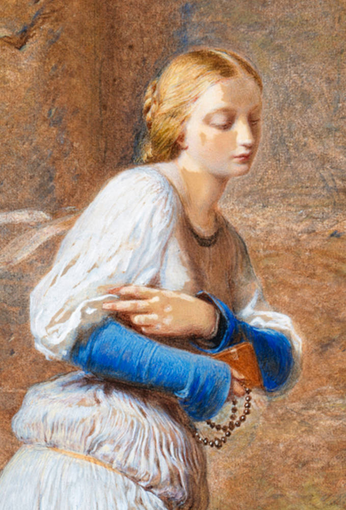
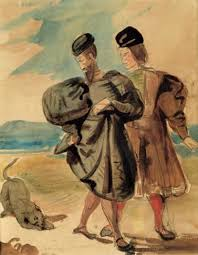
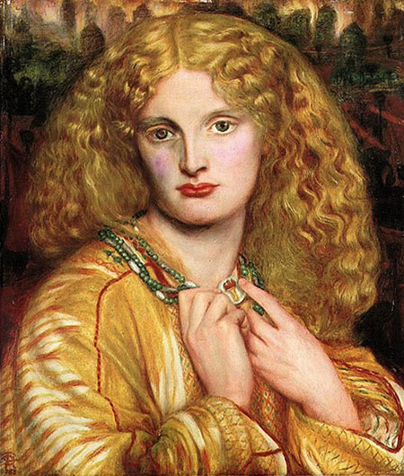
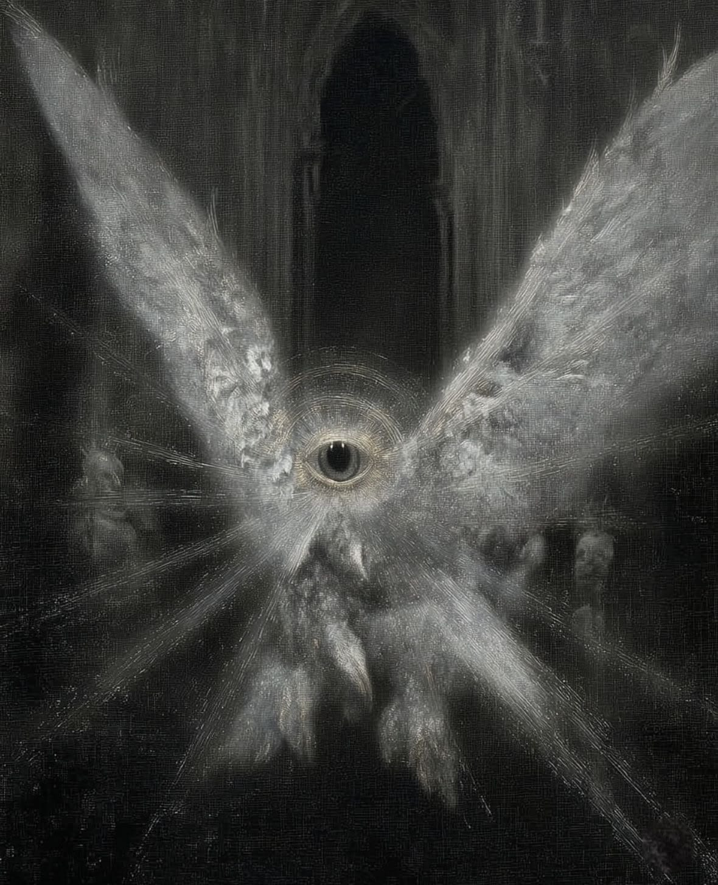

Разочарованный в науке, заключает сделку с дьяволом в поисках смысла жизни. В финале его душа спасается благодаря вечному стремлению.

Циничный и остроумный, заключает пари с Господом. Помогает Фаусту, но в финале проигрывает — душа Фауста ускользает от него.

Простая девушка. Её любовь к Фаусту приводит к трагедии. В конце первой части её душа получает прощение.

Учёный-педант, противоположность Фауста. Во второй части создаёт Гомункула — искусственного человечка в колбе.

Появляется во второй части. Фауст соединяется с ней — это символический брак германского и античного начал.

В «Прологе на небесах» верит в Фауста и заключает пари с Мефистофелем. Именно его вера спасает душу Фауста в финале.